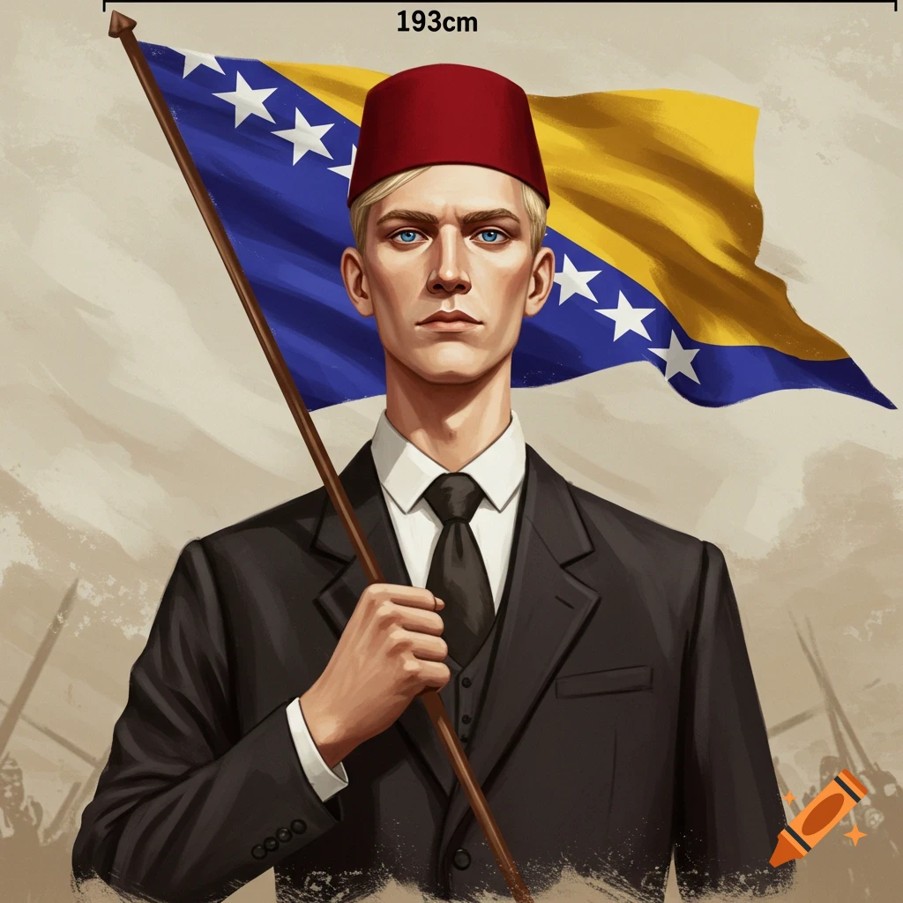

Balkán összecsapás!
Csata tört ki az iskola területén amikor egy bosnyák diák vitába került a albán cserediákkal
Csata tört ki az iskola területén amikor egy bosnyák diák vitába került a albán cserediákkal
Már 8 hónapja vannak terrorizálva az iskola mosdói. Britt tudósok továbbra is szorgosan dolgoznak az ügyön.
Hosszas fontolkodások után visszakerült a szigmákos tészta az iskola étlapjára.